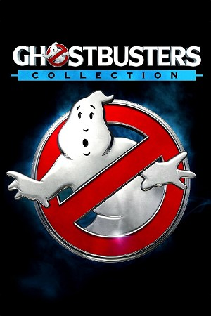

Ghostbusters Collection (1984)
ComedyFantasy
| Year | 1984 |
|---|---|
| Type | BoxSet |
| Genre | Comedy, Fantasy |
Ghostbusters is a 1984 American supernatural comedy film, directed and produced by Ivan Reitman and written by Dan Aykroyd and Harold Ramis. The film stars Bill Murray, Aykroyd, and Ramis as three eccentric parapsychologists in New York City who start a ghost-catching business. The second film, Ghostbusters II, was released in 1989.